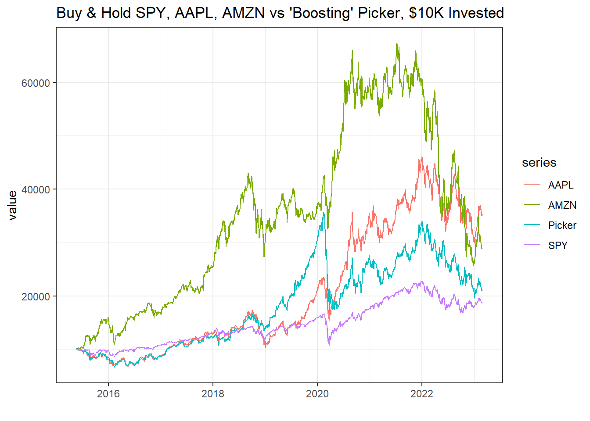
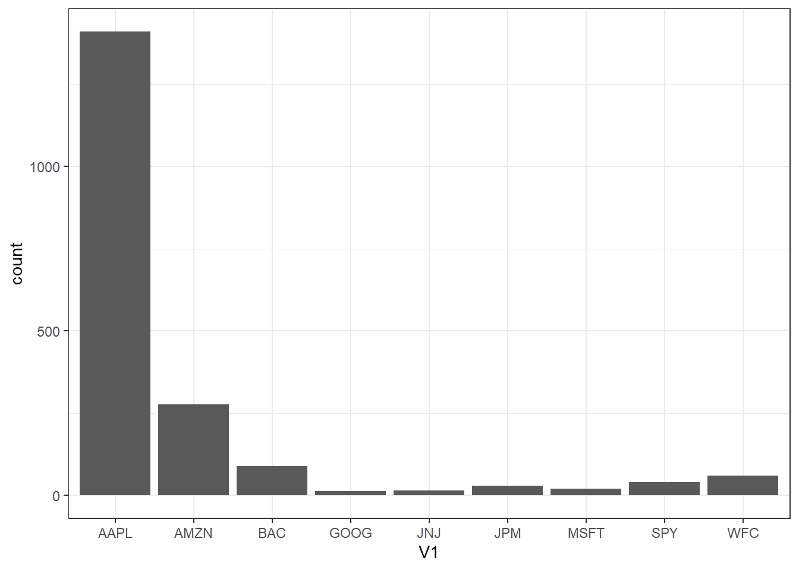
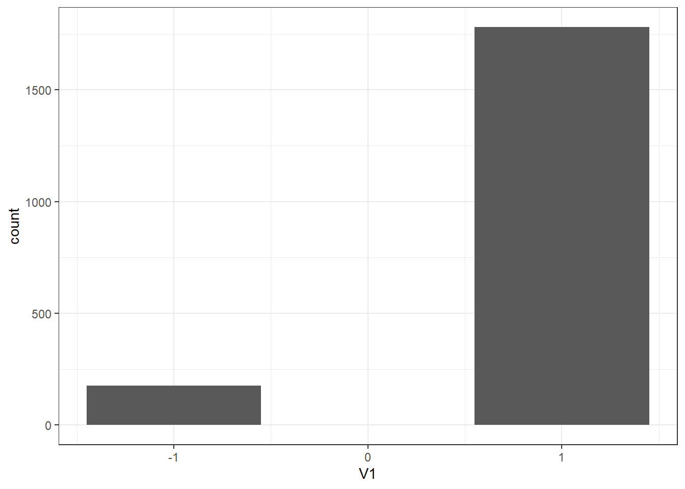

Machine Learning and Econometrics: Trees, Random Forests, and Boosting
This is the third in a series of posts where I document my own process in figuring out how machine learning relates to the classic econometrics one learns in a graduate program in economics. Note that I am a humble practitioner of applied econometrics, so the ideas I am working through are not new, and my first take on them might not even be fully correct. But, I think many of us applied economists are starting to learn and dabble in this area and I thought it might be fruitful to community if I learn publicly in these blog posts. These posts are certainly going to solidify my own understanding and serve as helpful notes for my own purposes.
In this post I summarize what I learned from Chapter 8 of Introduction to Statistical Learning (ISL). In my last post I covered cross validation from chapter 5. I am skipping chapters 6 (Linear Model Selection and Regularization) and 7 (Moving Beyond Linearity) partly because I have kind of seen some of that stuff before and partly because I need to move my learning along in order to get something prepared for the SCC-76 meeting April 5-7th (Todd and Todd, I hope you aren’t getting nervous yet!).
I’m really excited to write up this post because it covers something that I truly know zero about, and feels like ‘real’ machine learning. Tree-Based Methods! I’ll briefly describe regression trees, bagging, random forests, and boosting.
Regression Trees
Regression trees take a fundamentally different approach to prediction than pretty much any kind of regression you will find in an econometrics class. In an econometrics class, you try to find the best function (often linear) that will predict the data. Specifically, you find \(\hat{f}(x)\) to predict values of \(y\) often by minimizing a quadratic loss function that looks something like the following:
\[\sum_{i=1}^n (y_i - \hat{f}(x))^2\]
So finding a functional form that minimizes the quantity above, usually referred to as the residual sum of squares (RSS), is the name of the game. If you further assume that the functional form is linear, then you just need to find the coefficients (\(\beta\)’s in most notation) and you end up with ordinary least squares estimates.
In a regression tree, you literally just find the cut-points in the prediction variables that split your sample in a way that gives the best possible prediction. This is really illustrated best with an example. I’ll piggyback on the example given in ISL. They use a database of professional baseball players’ salary. The database includes variables for years in the league and number of hits. The figure below is from ISL and it displays the result of fitting a regression tree to this data to predict the log of players’ salary. The first step is to determine which predictor has the best predictive power. Since we see years in the first split of the tree, it must be that splitting years at 4.5 years resulted in the best prediction compared to any other split in the years variable, and compared to splitting with hits first instead.
In the second step, there are two leaves that may be split further, or the tree may stop splitting if there are less than a threshold number of observations in that bin. So for observations with years less than 4.5 years, you get your salary prediction by averaging the salary of all players who have been in the league less than 4.5 years. This average is 5.11 (logged salary…).
On the other branch, for observations where year is greater than 4.5 years, there are more observations and we can split the sample based on the next best predicting variable. In this case, it is hits. So the algorithm searching for a split in the hits variable for observations that have years greater than 4.5 and it finds the best predicted salary comes from splitting hits at 117.5.

This figure is taken from “An Introduction to Statistical Learning, with applications in R” (Springer, 2013) with permission from the authors: G. James, D. Witten, T. Hastie and R. Tibshirani
That is it. It is pretty simple conceptually. The book discusses techniques to prevent over-fitting, specifically ‘pruning’ the tree. But I’ll leave that for interested readers to explore themselves. However, a simple regression tree as I described above can be influenced highly be slight changes or additions to the data-set, making the predictions not very robust.
The methods of bagging and random forests attempt to stabilize the results. I find the approach to be pretty intuitive.
Bagging
It turns out, bagging stands for ‘bootstrapped aggregation’. Once you know that, and if you have ever used a bootstrap, you might be able to guess what bagging is. The idea is that you can create more robust predictions by bootstrapping a bunch of sub-samples, fitting a regression tree to each sub-sample, and then averaging the predictions across the bootstrapped sample. By bootstrapping and then aggregating, you will greatly reduce the variance in your predictions as you update your sample to include new data. Then you would test your predictions on a hold out sample that was never drawn from for any of the bootstrap samples. This is called ‘out of bag’ prediction. There must be a funny dad joke in there. That is left as an exercise to the reader (that part is a professor joke).
Cool. Very simple idea.
Random Forests
Bagging will improve accuracy and robustness of predictions, however random forests and improve further. Bagging can be improved upon because if one of your variables is a pretty good predictor, than it will probably be a pretty good predictor in most of your bootstrap samples. That will lead it to appear higher in the regression tree, and the split will probably be pretty similar across bootstrapped samples too. That means the predictions across bootstrapped samples within the bag will be pretty correlated and you are not getting as much bang for your buck from the bootstrapped samples as you would hope.
A random forest solves this problem by randomly choosing a subset of the predictors as candidates for the split. At each split and new subset of potential predictors is chosen. This restriction de-correlates the trees in the bagging process. The intuition is easiest to follow if you think about the best predictor. The best predictor will end up being the predictor that is split first in most of the bagged regression trees. However, in a random forest, some of those trees do not allow the best predictor to be used in the first split. Hence, the tree will be different then the highly correlated trees from the bagged sample. Counter-intuitively, by handicapping the bootstrapped trees this way you usually reduce the mean square error of the predictions.
Boosting
So, as we learned, random forests are a natural extension of bagging, and both are built on taking bootstrapped samples and applying a regression tree to each sample. Boosting is different, in that a boosted regression tree is built off of one test sample, and the trees are built sequentially. It took me a bit more to understand the basic idea of boosting. But what happens is this:
- Define the test sample
- Fit a regression tree with depth d = the number of splits, and shrinkage parameter chosen (see chapter 6. shrinkage parameter as in a ridge or lasso regression)
- Calculate residuals from the actual and predicted values
- Fit a regression tree to the residuals obtained in step 3
- Repeat 3 and 4 until the desired number of trees has been fitted
Since the sequential trees improve on the residuals of the previous steps, the model is said to ‘learn slowly’, which generally achieves a better fit.
A Forecasting Example
Since bagging, random forests, and boosting are completely new techniques to me, I wanted to apply them in an area that is familiar to me, and also the the very hardest environment to forecast in… the stock market. For this example I will focus on boosting, because I did some small forecasting test runs in stocks, and indeed, the basic boosting algorithm used in ISL had a lower mean square error than bagging, random forests, or a linear model.
Here’s the forecasting set up.
I will consider the top 10 S&P 500 companies by market cap, and try to forecast the stock with the largest absolute value of return and buy it if the largest forecasted return is positive or sell it if the largest forecasted return is negative. Also, I will throw in four of the biggest Spyder sector exchange traded funds and predictors just for fun.
Facebook and Berkshire Hathaway are excluded and replaced with the #11 and #12 companies - Bank of America and Wells Fargo. I wanted to use a long series and FB has only been public since 2012, and I had trouble downloading the Berkshire Hathaway data.
I will use a boosting model to forecast the daily return of each stock. Then I will pick which one to buy or sell based on which stock had the largest forecasted return in absolute value. I like this method of evaluating forecast performance because it is hard to tell from a mean squared error-type estimate if you have a forecast that is good enough to make money. So turning the forecast into a trading strategy and then back-testing it’s performance gives you a sense of the quality of your forecasts.
A Few Caveats Up-Front
I am going to use data going back to 2007, but I am restricting my choices to the current top 10 market cap companies. Companies like Google and Amazon were not in the top 10 by market cap in 2007, so the fact that they ascended to the top 10 by today builds in a lot of look-back bias. If you know a company go from not being in the top 10, to being in the top 10 you don’t need a fancy forecasting model to make money. Just buy it.
I could do this better if I restricted my decision set to who was in the top 10 at the time of the forecast. I could also do better if I set up my forecast to use a rolling window of, say, 50 or 100 observations and then re-estimate the boosted model each day. Both of those things would reduce the look back bias, but the purpose of this post is more for me to get a feel for the boosting algorithm than it is to find the best realistic forecasting model.
And like I always tell my students, if I ever find a forecasting model that actually works well enough to make money, I’ll never tell you about it!
The Details
The code below loads the required R packages and downloads the stocks that I want.
# If you haven't installed any of the packages listed below, do so with the "install.packages('tibble')" command.
library(tibble)
library(tidyr)
library(ggplot2)
library(knitr)
library(quantmod)
library(randomForest)
library(PerformanceAnalytics)
library(gbm)
library(broom)
#SPY and Top 10 S&P 500 Companies by Market Cap (BRK.B replaced by #11 BAC, bc Berkshire wouldn't download. FB replaced by #12 WFC bc I want long sample and FB has only been trading since '12. Plus 4 of the biggest Spyder sector etfs.) XLF - Financials, XLK - Tech, XLE - Energy, XLY - Consumer Discretionary
SP <- c("SPY", "AAPL", "MSFT", "AMZN", "WFC", "JPM", "BAC", "JNJ", "GOOG", "XOM", "XLF", "XLK", "XLE", "XLY")
getSymbols(SP) [1] "SPY" "AAPL" "MSFT" "AMZN" "WFC" "JPM" "BAC" "JNJ" "GOOG" "XOM"
[11] "XLF" "XLK" "XLE" "XLY" SP <- cbind(SPY$SPY.Adjusted, AAPL$AAPL.Adjusted, MSFT$MSFT.Adjusted, AMZN$AMZN.Adjusted, WFC$WFC.Adjusted, JPM$JPM.Adjusted, BAC$BAC.Adjusted, JNJ$JNJ.Adjusted, GOOG$GOOG.Adjusted, XOM$XOM.Adjusted, XLF$XLF.Adjusted, XLK$XLK.Adjusted, XLE$XLE.Adjusted, XLY$XLY.Adjusted)
colnames(SP) <- c("SPY", "AAPL", "MSFT", "AMZN", "WFC", "JPM", "BAC", "JNJ", "GOOG", "XOM", "XLF", "XLK", "XLE", "XLY")The next chunk of code calculates percentage returns, create lags, and combine into one object, SPRet.
SPRet <- Return.calculate(SP, method = 'log')
laggs.1 <- apply(SPRet, 2, Lag, 1)
laggs.2 <- apply(SPRet, 2, Lag, 2)
laggs.3 <- apply(SPRet, 2, Lag, 3)
laggs.4 <- apply(SPRet, 2, Lag, 4)
laggs.5 <- apply(SPRet, 2, Lag, 5)
laggs.6 <- apply(SPRet, 2, Lag, 6)
laggs.7 <- apply(SPRet, 2, Lag, 7)
laggs.8 <- apply(SPRet, 2, Lag, 8)
laggs.9 <- apply(SPRet, 2, Lag, 9)
laggs.10 <- apply(SPRet, 2, Lag, 10)
laggs <- cbind(laggs.1, laggs.2, laggs.3, laggs.4, laggs.5, laggs.6, laggs.7, laggs.8, laggs.9, laggs.10)
SPRet <- cbind(SPRet, laggs)
NAMES <- c("SPY", "AAPL", "MSFT", "AMZN", "WFC", "JPM", "BAC", "JNJ", "GOOG", "XOM", "XLF", "XLK", "XLE", "XLY")In the next code chunk we split the data into training and testing sub-samples. Then it uses the gbm() function from the gbm package to use a gradient boosting machine to implement the boosted regression trees. For a more technical description of the gbm, see here. We we get boosted predictions for each of the stocks we are considering.
#set.seed(15) #GOOD
#set.seed(12) #also good
#train <- sample(12:nrow(SPRet[12:dim(SPRet)[1]]), nrow(SPRet[12:dim(SPRet)[1]])/1.5)
#temp <- SPRet[train]
temp <- SPRet[12:2110,]
testing <- SPRet[2110:(dim(SPRet)[1]),]
ntrees <- 1000
depth <- 1
# SPY
SPRtemp <- temp[, setdiff(colnames(SPRet), c("AAPL", "MSFT", "AMZN", "WFC", "JPM", "BAC", "JNJ", "GOOG", "XOM", "XLF", "XLK", "XLE", "XLY"))]
boost.SPY <- gbm(SPY~., data= SPRtemp, distribution = "gaussian", n.trees = ntrees, interaction.depth = 4, shrinkage = .001)
yhat.SPY <- predict(boost.SPY, newdata = testing, n.trees = ntrees)
SPRtempFull <- SPRet[2110:(dim(SPRet)[1]), setdiff(colnames(SPRet), c("AAPL", "MSFT", "AMZN", "WFC", "JPM", "BAC", "JNJ", "GOOG", "XOM", "XLF", "XLK", "XLE", "XLY"))]
yhat.SPY <- predict(boost.SPY, newdata = SPRtempFull, n.trees = ntrees)
indicator.SPY <- apply(as.matrix(Lag(yhat.SPY)[2:dim(Lag(yhat.SPY))]), 1, function(x) if(x<0) (-1) else 1)
# AAPL
SPRtemp <- temp[, setdiff(colnames(SPRet), c("SPY", "MSFT", "AMZN", "WFC", "JPM", "BAC", "JNJ", "GOOG", "XOM", "XLF", "XLK", "XLE", "XLY"))]
boost.AAPL <- gbm(AAPL~., data= SPRtemp, distribution = "gaussian", n.trees = ntrees, interaction.depth = depth, shrinkage = .001)
yhat.AAPL <- predict(boost.AAPL, newdata = testing, n.trees = ntrees)
SPRtempFull <- SPRet[2110:(dim(SPRet)[1]), setdiff(colnames(SPRet), c("SPY", "MSFT", "AMZN", "WFC", "JPM", "BAC", "JNJ", "GOOG", "XOM", "XLF", "XLK", "XLE", "XLY"))]
yhat.AAPL <- predict(boost.AAPL, newdata = SPRtempFull, n.trees = ntrees)
indicator.AAPL <- apply(as.matrix(Lag(yhat.AAPL)[2:dim(Lag(yhat.SPY))]), 1, function(x) if(x<0) (-1) else 1)
# MSFT
SPRtemp <- temp[, setdiff(colnames(SPRet), c("SPY", "AAPL", "AMZN", "WFC", "JPM", "BAC", "JNJ", "GOOG", "XOM", "XLF", "XLK", "XLE", "XLY"))]
boost.MSFT <- gbm(MSFT~., data= SPRtemp, distribution = "gaussian", n.trees = ntrees, interaction.depth = depth, shrinkage = .001)
yhat.MSFT <- predict(boost.MSFT, newdata = testing, n.trees = ntrees)
SPRtempFull <- SPRet[2110:(dim(SPRet)[1]), setdiff(colnames(SPRet), c("SPY", "AAPL", "AMZN", "WFC", "JPM", "BAC", "JNJ", "GOOG", "XOM", "XLF", "XLK", "XLE", "XLY"))]
yhat.MSFT <- predict(boost.MSFT, newdata = SPRtempFull, n.trees = ntrees)
indicator.MSFT <- apply(as.matrix(Lag(yhat.MSFT)[2:dim(Lag(yhat.SPY))]), 1, function(x) if(x<0) (-1) else 1)
# AMZN
SPRtemp <- temp[, setdiff(colnames(SPRet), c("SPY", "AAPL", "MSFT", "WFC", "JPM", "BAC", "JNJ", "GOOG", "XOM", "XLF", "XLK", "XLE", "XLY"))]
boost.AMZN <- gbm(AMZN~., data= SPRtemp, distribution = "gaussian", n.trees = ntrees, interaction.depth = depth, shrinkage = .001)
yhat.AMZN <- predict(boost.AMZN, newdata = testing, n.trees = ntrees)
SPRtempFull <- SPRet[2110:(dim(SPRet)[1]), setdiff(colnames(SPRet), c("SPY", "AAPL", "MSFT", "WFC", "JPM", "BAC", "JNJ", "GOOG", "XOM", "XLF", "XLK", "XLE", "XLY"))]
yhat.AMZN <- predict(boost.AMZN, newdata = SPRtempFull, n.trees = ntrees)
indicator.AMZN <- apply(as.matrix(Lag(yhat.AMZN)[2:dim(Lag(yhat.SPY))]), 1, function(x) if(x<0) (-1) else 1)
# WFC
SPRtemp <- temp[, setdiff(colnames(SPRet), c("SPY", "AAPL", "MSFT", "AMZN", "JPM", "BAC", "JNJ", "GOOG", "XOM", "XLF", "XLK", "XLE", "XLY"))]
boost.WFC <- gbm(WFC~., data= SPRtemp, distribution = "gaussian", n.trees = ntrees, interaction.depth = depth, shrinkage = .001)
yhat.WFC <- predict(boost.WFC, newdata = testing, n.trees = ntrees)
SPRtempFull <- SPRet[2110:(dim(SPRet)[1]), setdiff(colnames(SPRet), c("SPY", "AAPL", "MSFT", "AMZN", "JPM", "BAC", "JNJ", "GOOG", "XOM", "XLF", "XLK", "XLE", "XLY"))]
yhat.WFC <- predict(boost.WFC, newdata = SPRtempFull, n.trees = ntrees)
indicator.WFC <- apply(as.matrix(Lag(yhat.WFC)[2:dim(Lag(yhat.SPY))]), 1, function(x) if(x<0) (-1) else 1)
# JPM
SPRtemp <- temp[, setdiff(colnames(SPRet), c("SPY", "AAPL", "MSFT", "AMZN", "WFC", "BAC", "JNJ", "GOOG", "XOM", "XLF", "XLK", "XLE", "XLY"))]
boost.JPM <- gbm(JPM~., data= SPRtemp, distribution = "gaussian", n.trees = ntrees, interaction.depth = depth, shrinkage = .001)
yhat.JPM <- predict(boost.JPM, newdata = testing, n.trees = ntrees)
SPRtempFull <- SPRet[2110:(dim(SPRet)[1]), setdiff(colnames(SPRet), c("SPY", "AAPL", "MSFT", "AMZN", "WFC", "BAC", "JNJ", "GOOG", "XOM", "XLF", "XLK", "XLE", "XLY"))]
yhat.JPM <- predict(boost.JPM, newdata = SPRtempFull, n.trees = ntrees)
indicator.JPM <- apply(as.matrix(Lag(yhat.JPM)[2:dim(Lag(yhat.SPY))]), 1, function(x) if(x<0) (-1) else 1)
# BAC
SPRtemp <- temp[, setdiff(colnames(SPRet), c("SPY", "AAPL", "MSFT", "AMZN", "WFC", "JPM", "JNJ", "GOOG", "XOM", "XLF", "XLK", "XLE", "XLY"))]
boost.BAC <- gbm(BAC~., data= SPRtemp, distribution = "gaussian", n.trees = ntrees, interaction.depth = depth, shrinkage = .001)
yhat.BAC <- predict(boost.BAC, newdata = testing, n.trees = ntrees)
SPRtempFull <- SPRet[2110:(dim(SPRet)[1]), setdiff(colnames(SPRet), c("SPY", "AAPL", "MSFT", "AMZN", "WFC", "JPM", "JNJ", "GOOG", "XOM", "XLF", "XLK", "XLE", "XLY"))]
yhat.BAC <- predict(boost.BAC, newdata = SPRtempFull, n.trees = ntrees)
indicator.BAC <- apply(as.matrix(Lag(yhat.BAC)[2:dim(Lag(yhat.SPY))]), 1, function(x) if(x<0) (-1) else 1)
# JNJ
SPRtemp <- temp[, setdiff(colnames(SPRet), c("SPY", "AAPL", "MSFT", "AMZN", "WFC", "JPM", "BAC", "GOOG", "XOM", "XLF", "XLK", "XLE", "XLY"))]
boost.JNJ <- gbm(JNJ~., data= SPRtemp, distribution = "gaussian", n.trees = ntrees, interaction.depth = depth, shrinkage = .001)
yhat.JNJ <- predict(boost.JNJ, newdata = testing, n.trees = ntrees)
SPRtempFull <- SPRet[2110:(dim(SPRet)[1]), setdiff(colnames(SPRet), c("SPY", "AAPL", "MSFT", "AMZN", "WFC", "JPM", "BAC", "GOOG", "XOM", "XLF", "XLK", "XLE", "XLY"))]
yhat.JNJ <- predict(boost.JNJ, newdata = SPRtempFull, n.trees = ntrees)
indicator.JNJ <- apply(as.matrix(Lag(yhat.JNJ)[2:dim(Lag(yhat.SPY))]), 1, function(x) if(x<0) (-1) else 1)
# GOOG
SPRtemp <- temp[, setdiff(colnames(SPRet), c("SPY", "AAPL", "MSFT", "AMZN", "WFC", "JPM", "BAC", "JNJ", "XOM", "XLF", "XLK", "XLE", "XLY"))]
boost.GOOG <- gbm(GOOG~., data= SPRtemp, distribution = "gaussian", n.trees = ntrees, interaction.depth = depth, shrinkage = .001)
yhat.GOOG <- predict(boost.GOOG, newdata = testing, n.trees = ntrees)
SPRtempFull <- SPRet[2110:(dim(SPRet)[1]), setdiff(colnames(SPRet), c("SPY", "AAPL", "MSFT", "AMZN", "WFC", "JPM", "BAC", "JNJ", "XOM", "XLF", "XLK", "XLE", "XLY"))]
yhat.GOOG <- predict(boost.GOOG, newdata = SPRtempFull, n.trees = ntrees)
indicator.GOOG <- apply(as.matrix(Lag(yhat.GOOG)[2:dim(Lag(yhat.SPY))]), 1, function(x) if(x<0) (-1) else 1)
SPRtempFull <- SPRet[2110:(dim(SPRet)[1]),]Now, the next chunk takes all the predictions, and each day records the stock that has the highest return in absolute value, and also records whether it was positive or negative so we know whether to buy or sell.
# Picking Stock with highest absolute value of predicted return.
all <- as.data.frame(cbind(yhat.SPY, yhat.AAPL, yhat.AMZN, yhat.MSFT, yhat.WFC, yhat.JPM, yhat.BAC, yhat.JNJ, yhat.GOOG))
colnames(all) <- c("SPY", "AAPL", "AMZN", "MSFT", "WFC", "JPM", "BAC", "JNJ", "GOOG")
Temp <- apply(abs(all), 1, which.max)
return.picker <- data.frame()
for (i in 1:length(Temp)){
return.picker[i,1] <- all[i, Temp[i]]
}
# Long or Short
indicator.picker <- apply(return.picker, 1, function(x) if(x<0) (-1) else 1)
# Actual Returns of Picked Stocks
return.Picker1 <- data.frame(stringsAsFactors = FALSE)
return.Picker2 <- data.frame(stringsAsFactors = FALSE)
return.Picker3 <- data.frame(stringsAsFactors = FALSE)
for (i in 1:length(Temp)){
return.Picker1[i, 1] <- SPRtempFull[i, Temp[i]]
return.Picker2[i, 1] <- colnames(all)[Temp[i]]
return.Picker3[i, 1] <- indicator.picker[i]
}
return.Picker1 <- xts(return.Picker1 , order.by = index(SPRtempFull))
return.Picker2 <- xts(return.Picker2 , order.by = index(SPRtempFull))
return.Picker3 <- xts(return.Picker3 , order.by = index(SPRtempFull))OK, now the next chunk of code takes $10,000 and starts buying or selling every day in the test set, which is after about September 2014.
invest <- 10000
DATA <- cbind(invest*cumprod(1+SPRtempFull$SPY), invest*cumprod(1+return.Picker1), invest*cumprod(1+SPRtempFull$AMZN), invest*cumprod(1+SPRtempFull$AAPL))
colnames(DATA) <- c('SPY', "Picker", "AMZN", "AAPL")
DATA <- tidy(DATA)How did the boosting stock picker do? I plot the cumulative returns of just buying and holding the SPY, Apple, and Amazon. Our boosted stock picker returns are in blue.
The boosting stock picker had us long Apple most of the time. Then in the test period, Amazon was the monster. But since we were not re-estimating the model, it never pivoted. I kind of expected it to recognize the large returns of Amazon and switch, even though it was using a dated model.
ggplot(DATA, aes(x = index, y = value, color = series)) +
geom_line() +
theme_bw() +
labs(title = "Buy & Hold SPY, AAPL, AMZN vs 'Boosting' Picker, $10K Invested", x = "")
This chart is just a count of the number of days in each stock.
ggplot(return.Picker2, aes(x = V1)) + geom_bar() + theme_bw()
And this chart is a count of the number of days we were long (1) versus short (-1).
ggplot(return.Picker3, aes(x = V1)) + geom_bar() + theme_bw()
The interesting thing is, that this method of stock picking with a boosting algorithm on lagged returns basically gives you the same result any trend following strategy would. And those are generally much simpler. The are along the lines of buy if the price is above the 50 day moving average, etc. I guess it does independently suggest that trend following is better than contrarian strategies which for example might sell if the price is above the 50 day moving average.
I’m curious about what the result would be in commodities. Stocks generally trend up, unless we are in a major correction. Commodities do not have that same property.
Perhaps another day…
That’s It!
That’s it for this time! I was a little surprised at how this method came out to be so similar to other trend following strategies. If I had suspected this from the beginning I would have set up a proper horse-race between the boosting stock picker and some other common trading strategies.